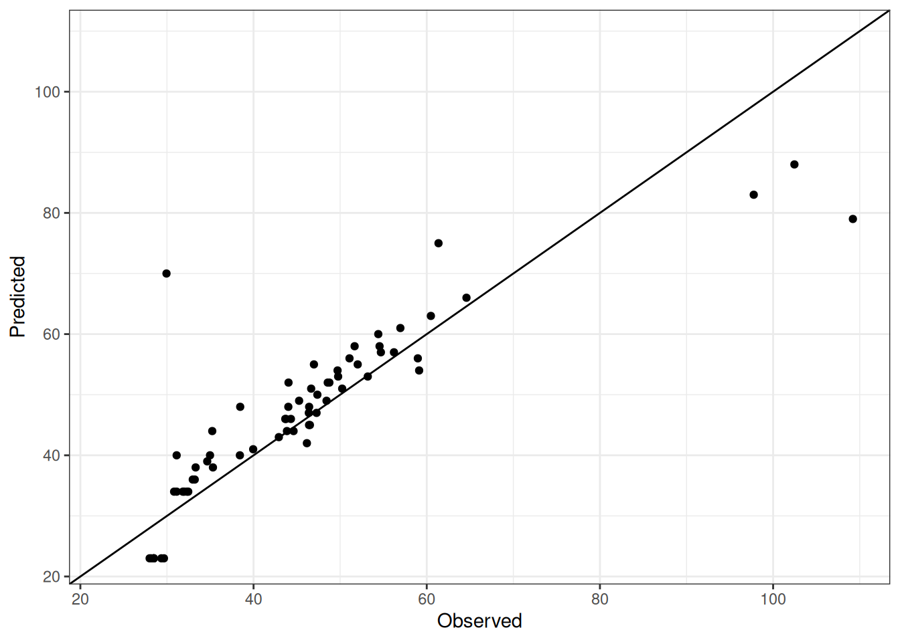

Roberts1986
This report is generated for performance of Lentil model in APSIM NG for experiment Roberts1986.
Experiment Information
The experiment specific information is provided in the memo of apsimx file.
)NA
Cultivars
Performance
Overview
The table below summarizes the performance of APSIM NG for all cultivars across experiment Roberts1986.
Roberts1986
| trait | n | r | r2 | bias | mse | rmse | nrmse | d |
|---|---|---|---|---|---|---|---|---|
| Phenology.StartBuddingDAS | 66 | 0.87 | 0.76 | -1.42 | 63.42 | 7.96 | 0.17 | 0.93 |
| Phenology.StartFloweringDAS | 88 | 0.90 | 0.81 | -3.77 | 112.32 | 10.60 | 0.18 | 0.93 |
Comparison of observed and predicted values
The model performance is compared with observed and predicted values for all cultivars across experiment Roberts1986. The plots below show the observed vs predicted values for different traits. Each point represents an observation from an experiment. The closer the points are to the diagonal line, the better the performance of the model for that trait.
The range of observed and predicted values are estimated using data in this page, which may be misleading for the narrow ranges of observed and predicted values.
Using the Expand All and Collapse All buttons below, you can expand or collapse the sections for each trait to see the observed vs predicted plots for different traits.
NotePhenology.StartBuddingDAS

NotePhenology.StartFloweringDAS